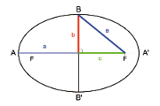

General Area Calculator
Elipse
A = Π · a · b -> El área es igual al producto de PI (3'1416...) por los ejes.
Una elipse es el conjunto de todos los puntos de un plano cuya suma de distancias a dos puntos fijos es una constante. Así que no importa dónde estés en la elipse: puedes sumar las distancias al punto "A" y al punto "B" y siempre saldrá lo mismo.
Los puntos "A" y "B" se llaman los focos de la elipse.